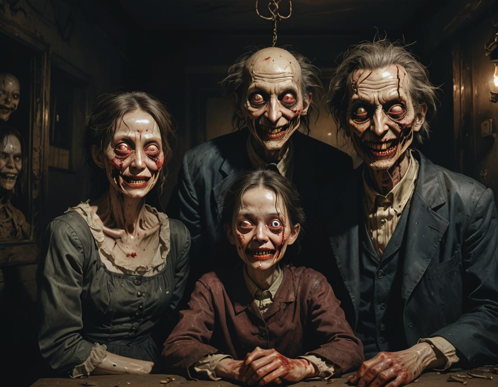
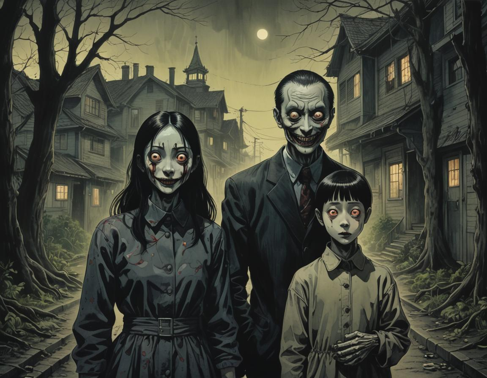

In a quiet town, nestled between dense woods, a young girl named Lily discovered an old doll in her
grandmother's attic. The doll, with its porcelain skin and hauntingly glassy eyes, had been long forgotten,
draped in cobwebs and dust. Intrigued, Lily brought it home, naming her "Emmeline."
At first, Emmeline seemed harmless, a charming companion for Lily's imaginative games. But soon, strange
occurrences began to unfold. Whispers echoed through the house at night, and shadows flitted just out of sight.
Lily's parents dismissed her fears as mere childhood imagination, but the doll's presence grew increasingly
unsettling.
One night, as a storm raged outside, Lily awoke to find Emmeline sitting upright on her bedside table, her eyes
glinting with an eerie light. Unable to move, Lily watched in terror as the doll’s mouth slowly opened,
revealing a voice that sent chills down her spine: “Play with me forever, Lily.”
Desperate, Lily tried to rid herself of the doll, tossing it into the darkness of the attic. But the next
morning, Emmeline was back on her table, a sinister smile painted across her porcelain face. The girl soon
learned that the doll was not merely a toy—it was a vessel of something malevolent, a spirit bound to her.
As the days passed, Lily's behavior changed; she grew withdrawn, her laughter fading. Whispers of the doll’s
curse spread through the town, and one by one, children began to vanish, last seen clutching their own dolls.
With a sense of dread tightening around her, Lily knew she had to confront Emmeline.
Armed with nothing but her courage, she ventured into the attic. There, she found the doll waiting, more
lifelike than ever. “You can’t escape me,” it taunted, eyes glimmering with a dark hunger. In a final act of
defiance, Lily snatched a hammer from her father’s toolbox, determined to shatter the curse once and for all.
But as she raised it high, a voice echoed in her mind, soft yet powerful: “You will join us, my dear.” And in
that moment, the attic darkened, shadows spiraled, and the line between reality and nightmare blurred. With one
swing, she struck, but the doll merely laughed, echoing through the night, sealing Lily’s fate within its cursed
embrace.
Now, in that old house, children still hear whispers calling them to play, their eyes drawn to the attic where
Emmeline waits, ever hungry for a new friend.

The Unraveling
In the remote village of Eldridge Hollow, the Thompson family led a seemingly ordinary life. There was Mark, the
pragmatic father; Sarah, his nurturing wife; their teenage daughter, Emily, known for her curiosity; and Oliver,
Mark’s father, a wise yet eccentric grandfather who often regaled them with tales of his youth.
One rainy evening, while exploring the attic for old family memorabilia, Emily stumbled upon a dust-covered
chest. Inside lay a collection of antique items: tarnished trinkets, yellowed photographs, and a peculiar,
leather-bound book. The book, titled “The Chronicles of the Undying,” piqued her interest. Ignoring the fraying
edges and ominous illustrations, she carried it downstairs, eager to share her find.
“Look what I found!” Emily exclaimed, her eyes sparkling with excitement. Mark glanced up from his laptop, Sarah
paused her cooking, and Oliver, intrigued by his granddaughter's enthusiasm, leaned closer.
“What is it?” Sarah asked, wiping her hands on a towel.
“It’s a book about immortality!” Emily replied, flipping through the pages. The text was written in a strange
script, but one section caught her attention. It described a ritual that could grant eternal life at a price—a
life must be sacrificed.
“Sounds like a spooky story,” Mark chuckled, but Emily insisted they read it together.
As twilight fell, they gathered in the living room, the soft glow of the fireplace casting flickering shadows on
the walls. Emily read aloud, the words weaving a chilling narrative that wrapped around them like a fog.
Intrigued yet unsettled, Sarah felt a creeping dread as the story revealed the gruesome cost of immortality.
“Maybe we should stop,” she suggested, but the allure of the unknown kept them captivated. They continued, the
air thick with an unspoken tension.
That night, as they settled in for bed, Oliver, unable to sleep, wandered into the living room. He found his
family still engrossed in the book, their expressions eerily entranced. “Can I join?” he asked, and as they
invited him closer, a chill filled the air. They continued to read, the words weaving a spell that entrapped
them all.
The next day, the family began to notice changes. The colors around them seemed duller, the sunlight less warm.
At dinner, they felt an unsettling disconnect, as if their minds were drifting apart. Oliver’s laughter, once
infectious, faded into silence, replaced by a growing sense of unease.
Days turned into a blur of confusion and dread. They felt a compulsion to return to the book, and every time
they read, they sensed the presence of something dark watching them. One evening, as they gathered again, the
final passage revealed the ritual's true nature: to become immortal, they must willingly offer a part of their
souls—an unspeakable sacrifice.
“It’s just a story!” Mark insisted, but deep down, he felt the weight of the words. Desperation clawed at Sarah,
who sensed that they were losing themselves. “We need to stop,” she pleaded, but the book’s pull was too strong.
One fateful night, consumed by fear and confusion, they decided to perform the ritual described in the tome,
believing it to be the only way to escape the creeping shadows that had begun to loom over them. They gathered
in the living room, marking a circle with salt, lighting candles, and chanting the incantations with trembling
voices.
As the final word left their lips, a violent wind swept through the room, extinguishing the candles. The shadows
thickened, coiling around them like a living thing. In that moment, they felt a searing pain, a fragment of
their essence tearing away. Their screams echoed, blending with the howling wind.
When the chaos subsided, the Thompsons stood in the dim light, breathless and disoriented. But something had
changed. Their reflections in the darkened windows revealed hollow eyes and pallid skin—an unsettling
transformation.
As they looked at each other, a chilling realization dawned: they were no longer fully alive. The book had
fulfilled its promise, but at a horrific cost. They were bound to the realm of the undead, trapped between life
and death.
At first, they tried to embrace their new existence, but soon they discovered that the hunger for life now
overshadowed their thoughts. Mark became obsessed with the factory where he once worked, haunting its empty
halls, while Sarah wandered the woods, searching for the warmth of sunlight that eluded her. Emily’s curiosity
morphed into a dark fascination with the macabre, leading her deeper into the village’s haunted history.
But it was Oliver, the grandfather, who became the most affected. Once a wise figure, he was now a shadow of his
former self, his stories twisting into dark tales of despair. He felt drawn to the edges of Eldridge Hollow,
where the veil between the living and the dead grew thin. In his mind, the boundaries between reality and
nightmare blurred, and he could almost hear the whispers of those who had perished, calling him into the void.
As days turned into weeks, the family realized their bond was unraveling, each member succumbing to the darkness
that had seeped into their souls. Their home, once filled with laughter, became a mausoleum of despair, haunted
by the echoes of who they used to be.
In a final, desperate act to reclaim their lives, they sought the book once more, hoping to reverse the ritual.
But as they gathered around the chest, they found it empty, the pages consumed by the very darkness they had
summoned.
In that moment, the Thompsons understood the true horror of their existence. They were bound to wander Eldridge
Hollow for eternity, a family of shadows trapped in a nightmarish cycle, forever longing for the life they had
sacrificed, haunted by the whispers of the undying.
And as the villagers went about their lives, the Thompsons became mere legends—tales of a family lost to
darkness, forever searching for a way back home.

The Hollow Neighbors of Yurei Lane
In the heart of a fog-laden village in the 19th century, the Ashworth family lived in a dilapidated manor that
had seen better days. The family consisted of Henry, the stern father with a secretive past; Clara, his frail
yet spirited wife; and their inquisitive son, Thomas, who was just old enough to sense the unease that permeated
their home.
The manor was said to be cursed, a legacy of the family’s ancestors, rumored to have dabbled in dark arts.
Locals whispered of strange happenings—disembodied voices in the night, shadows moving against the walls, and
glimpses of figures flitting through the dense woods surrounding their estate. The Ashworths dismissed the
rumors, believing them to be mere superstitions.
As autumn descended, the days grew shorter, and the oppressive fog thickened. Clara began to suffer from strange
dreams—visions of a woman in white wandering the halls of the manor, her face twisted in sorrow. Each night, she
awoke in terror, breathless and drenched in sweat, the ghostly figure haunting her thoughts.
One evening, while exploring the dusty attic, Thomas stumbled upon a hidden trunk. Inside, he found old family
journals detailing the tragic fate of the Ashworths’ ancestors. As he read, a chill crept over him. The entries
spoke of a ritual gone wrong, a pact made in blood that demanded a sacrifice every generation to keep a dark
force at bay.
Frightened yet intrigued, Thomas shared his discovery with Clara. Together, they confronted Henry, who had
always dismissed their fears. But the shadows in the manor grew bolder, whispering of betrayal and vengeance.
Henry’s facade cracked, revealing his own connection to the dark legacy. He had tried to ignore the family’s
past, but now it was clawing its way back into their lives.
Desperate, Clara sought a way to break the cycle. She researched local lore, learning of an ancient rite that
could sever the bond with the dark force. With the last light of the harvest moon, she gathered herbs and
candles, preparing for the ritual in the manor’s decaying garden.
On the appointed night, as Clara chanted the incantation, a wind howled through the trees, extinguishing the
candles. The shadows thickened, swirling around her like a tempest. From the depths of the manor, a voice
boomed—Henry’s voice, twisted and malevolent. “You cannot escape our fate!”
In a desperate bid, Clara called out to Thomas, urging him to run. But as she turned, she saw him standing
entranced, his eyes reflecting the same darkness that had plagued their family for generations. The boy had
become a vessel for the very force they sought to banish.
Realizing that the dark pact demanded not just one sacrifice, but a bond—mother and son entwined in an eternal
cycle of despair—Clara felt her heart shatter. In a moment of horrifying clarity, she understood that the only
way to save Thomas was to sever their bond entirely.
With tears streaming down her face, Clara completed the incantation, unleashing a surge of energy that shook the
very foundation of the manor. The shadows screamed, and the dark force that had haunted the Ashworths was drawn
into a vortex of light, consuming everything in its path.
As the ritual reached its climax, a blinding flash engulfed the garden. In that moment, Thomas collapsed to the
ground, his body contorting as the dark energy fought for control. Clara rushed to her son, but the shadows
swirled around them, relentless and unforgiving.
“No!” she cried, reaching for him. But it was too late. The darkness consumed Thomas, pulling him into its
depths, his anguished screams echoing through the night. In an instant, the light flickered and vanished,
leaving only silence in its wake.
The manor lay still, the fog lifting to reveal a dawn that had never seemed so bright, yet it felt hollow.
Clara, now alone, was left to mourn her son, the weight of his loss heavy on her heart.
The villagers spoke of the Ashworth manor as a place of both loss and despair. Clara wandered its halls, a ghost
of her former self, forever haunted by the sacrifice made to protect her family. And though she remained, Thomas
was gone, a tragic casualty of a dark legacy that would forever entwine them, leaving the manor shrouded in
shadows, waiting for the next generation to answer its sinister call.